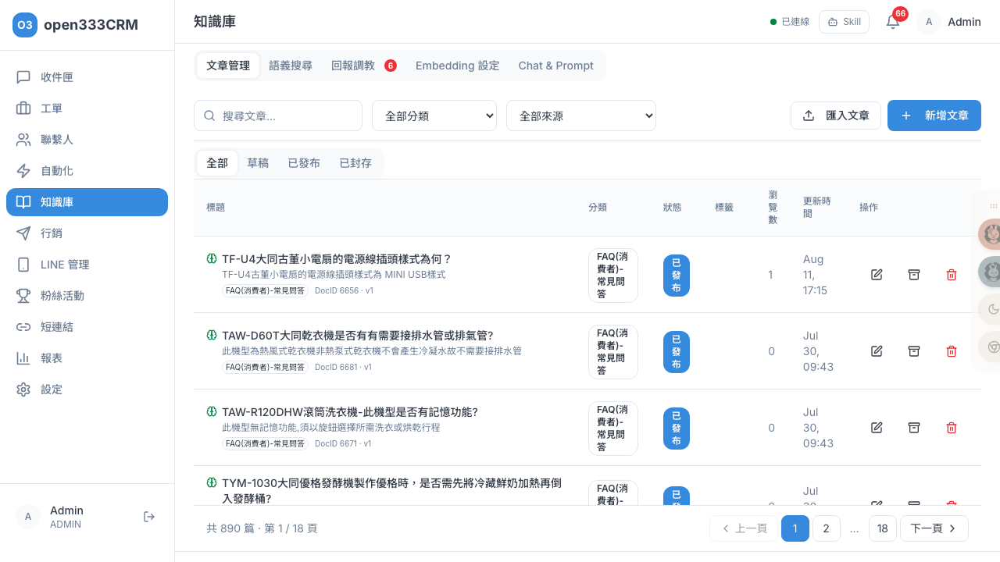
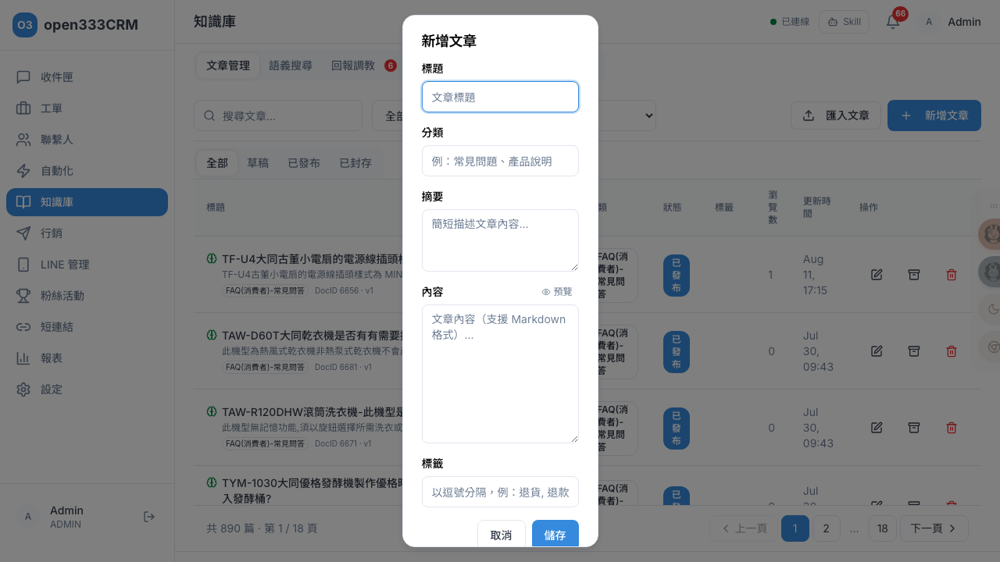
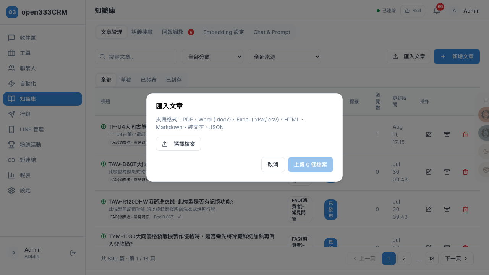

知識庫
建立 FAQ 文章供 AI 自動回覆引用。文章會被向量化（embedding），讓 Bot 用語義搜尋找到最相關的答案，做到準確的知識問答。
1 功能總覽
知識庫是 AI 客服的「大腦」。你把 FAQ、產品說明寫成文章，系統會把每篇文章轉成「向量」（一串代表語義的數字）存起來；當客戶發問時，Bot 把問題也轉成向量，找出語義最接近的文章，用它們的內容來回答。這套機制叫 RAG（檢索增強生成）——先「檢索」到相關資料，再讓 AI「生成」回答，好處是答案有憑有據、不會憑空亂編。
頁面頂端有 5 個分頁，涵蓋「內容管理」到「AI 調校」的完整流程：
| 分頁 | 做什麼 | 誰會用 |
|---|---|---|
| 文章管理 | 建立、編輯、發布、封存知識庫文章 | 編輯內容的人 |
| 語義搜尋 | 測試「客戶這樣問，Bot 找不找得到答案」 | 驗證涵蓋度 |
| 回報調教 | 處理客戶按「👎 沒幫到我」的回報（有待處理時分頁上顯示紅色數字） | 持續改善 |
| Embedding 設定 | 調整向量模型與檢索參數（topK、相似度門檻） | 進階 / 管理員 |
| Chat & Prompt | 設定 AI 用哪個模型、怎麼回話（提示詞） | 進階 / 管理員 |
2 文章管理
「文章管理」列出所有知識庫文章，可依分類、來源、標籤、狀態篩選（列表每頁 50 筆）。

每篇文章顯示標題、分類、狀態徽章、標籤、瀏覽數、更新時間，以及來源徽章與 DocID/版本。標題前的腦圖示代表「已向量化」（滑鼠移上會顯示提示）——這個圖示很重要，因為只有向量化過的文章 Bot 才找得到。
三種文章狀態的意義
狀態不只是標籤，它直接決定這篇文章 Bot 會不會用：
| 狀態 | 意義 | Bot 會引用嗎？ | 可做的操作 |
|---|---|---|---|
| 草稿 | 剛建立、還在寫，尚未生效 | ❌ 不會 | 編輯、發布、封存、刪除 |
| 已發布 | 已生效並向量化 | ✅ 會（前提是有向量） | 編輯、封存、刪除 |
| 已封存 | 停用、暫時收起來 | ❌ 不會 | 編輯、刪除 |
3 新增文章
在文章管理分頁點「新增文章」開啟編輯對話框。

逐欄位說明
| 欄位 | 必填 | 上限 | 說明與留空行為 |
|---|---|---|---|
| 標題 | ✓ | 200 字 | 沒填送不出去 |
| 分類 | 100 字 | 留空存檔時系統自動填「一般」（例：常見問題、產品說明） | |
| 摘要 | 500 字 | 簡短描述，可留空 | |
| 內容 | ✓ | 無上限 | 支援 Markdown，右上可切「預覽 / 編輯」；沒填送不出去 |
| 標籤 | — | 以逗號分隔（例：退貨, 退款, 政策），系統自動去除多餘空白 |
按下「儲存」後系統做了什麼
這是知識庫最重要的眉角，理解它才知道「為什麼寫好還不夠」：
- 新增：文章一律以草稿狀態建立，並立刻在背景開始向量化。要它生效，還得在列表按「發布」。
- 編輯：只有改動了標題 / 內容 / 摘要才會重新向量化；只改分類或標籤不會重算（省資源）。
- 向量化是背景執行、不會卡住存檔。若向量服務（Ollama）沒開，存檔照樣成功，只是這篇沒有向量、Bot 搜不到——這時要靠「Embedding 設定」的「批次重新嵌入」補做。
4 匯入文章
已有現成文件時，可批次匯入，不必一篇篇手打。點「匯入文章」開啟對話框，一次上傳多個檔案。

不同檔案的處理方式（重要差異）
系統會依檔案格式自動解析，但「Excel / CSV」和「其他檔案」的行為很不一樣，這是最常踩的坑：
| 檔案類型 | 怎麼處理 | 匯入後狀態 |
|---|---|---|
| Excel / CSV （有問答欄） | 系統偵測到「問題欄 / 答案欄」時，會一列拆成一篇文章（問=標題、答=內容） | 直接發布（不用再手動發） |
| PDF / Word / HTML / Markdown / 純文字 | 整個檔案轉成一篇文章 | 草稿（要再手動發布） |
| JSON | 必須是文章陣列，逐筆匯入 | 依內容 |
5 語義搜尋
「語義搜尋」分頁是知識庫的體檢工具——用它模擬「客戶這樣問，Bot 找不找得到答案」。輸入一個問題（例如「冰箱不冷怎麼辦」），系統依向量相似度找出最相關的文章，每筆顯示「XX.X% 匹配」與摘要、分類、標籤。
它跟一般關鍵字搜尋不同：是比對「語義」而非「字面」。所以「冰箱不冷」也能找到標題寫「冷藏室溫度不足排查」的文章，即使一個字都沒重疊。
6 回報調教
當客戶在 LINE 收到 Bot 的回答後，答案下方有「👎 沒幫到我」按鈕。客戶一按，這次問答就會進入「回報調教」分頁，形成一個持續改善的閉環。分頁上的紅色數字是待處理筆數。
每筆回報顯示：時間、相似度 %（例「相似度 62%」）、客戶原本怎麼問、Bot 當時怎麼答、命中的文章標題（含 DocID）。你能一眼看出「Bot 答錯是因為文章寫得不夠好，還是根本沒這篇文章」。
7 Embedding 設定
「Embedding 設定」管理「文章怎麼被轉成向量」與「檢索時怎麼找」。這區偏技術，一般由管理員設定。
服務狀態
上方顯示向量服務（Ollama）是否「連線正常 / 異常」、目前模型「已安裝 / 未安裝」，可按「重新檢測」。若這裡異常，新文章不會被向量化、Bot 也搜不到。
檢索參數的意義（調高調低的效果）
| 參數 | 預設 / 範圍 | 調高會怎樣 | 調低會怎樣 |
|---|---|---|---|
| topK （取前幾筆） | 5（1–20） | 召回更多文章、更不易漏答案，但雜訊多、AI 讀的內容變長 | 更精準聚焦，但可能漏掉相關文章 |
| 相似度門檻 | 0.30（0.00–1.00） | 只留高度相關的（可能一篇都不回，寧缺勿濫） | 更寬鬆、回更多結果（含勉強相關的） |
Embedding 模型預設 bge-m3（向量維度固定 1024）。
批次重新嵌入
這區有三個統計方塊「總文章數 / 已嵌入 / 未嵌入」（只算已發布文章），下方「重新嵌入全部已發布文章」按鈕。適用時機：換了模型、或發現有文章顯示已發布卻搜不到（沒向量）。
8 Chat & Prompt 設定
如果說 Embedding 設定管「怎麼找資料」，這區就是管「AI 拿到資料後怎麼回話」——選用哪個 AI 模型、回話的風格與規則。
Provider 與模型
可選 Ollama（本地）或 Gemini（雲端）。切換會自動帶入預設模型（Gemini→gemini-2.5-flash、Ollama→qwen2.5:3b）。Gemini 模型分「穩定版 / Latest（自動跟版）/ Preview（測試版，不穩定）」三群，正式環境建議用穩定版。
生成參數
| 參數 | 預設 / 範圍 | 影響 |
|---|---|---|
| Temperature | 約 0.2–0.3（0.00–1.00） | 調高：回答更有變化但更可能亂編；調低：更保守、更貼知識庫。客服場景建議偏低，重視準確 |
| Max Tokens | 500（50–2000） | 回覆長度上限。太低會被截斷 |
四個 System Prompt（決定 Bot 的性格與規則）
每個 Prompt 用在不同場景，留空則用系統預設（會顯示「N 字（將使用預設）」）：
| Prompt | 用在哪 | 預設在做什麼 |
|---|---|---|
| 客服回覆 | 知識庫自動回覆、AI 建議、自動化 LLM 動作 | 要求「只根據知識庫回答，查不到就說『幫您轉接專人』，絕不推測型號/價格/保固」 |
| 對話摘要 | 接管對話時的 AI 摘要 | 產生 2–4 句、不超過 200 字的摘要（含問題、狀態、後續建議） |
| 型號引導 | 客戶提到查不到的產品型號時 | 引導客戶從相近型號清單確認，而非拿相似型號硬答 |
| 多輪追問（Clarify） | 客戶問題資訊不足時 | 反問一個澄清問題（不重複問已提供的資訊） |
多輪追問（Clarify）參數
- 觸發門檻（預設 0.5）：知識庫找到的最高相似度低於此值，就改用「追問」而非硬答。端點是「0.00 總是追問 / 1.00 從不追問」。
- 最大追問次數（預設 2）：追問超過這個次數還問不清楚，就自動轉接真人客服。
9 Bot 如何用知識庫回答
理解 Bot 的決策邏輯，就能看懂「為什麼 Bot 這樣回」，也知道該調哪個設定。當客戶發問、對話由 Bot 處理時，系統依找到的最高相似度分層決定怎麼回：
| 相似度 | Bot 的行為 |
|---|---|
| ≥ 80% | 高信心：直接用知識庫內容回答，不附轉接提示 |
| 門檻 ~ 80% | 中信心：用知識庫回答，但額外附上「可轉接真人」的提示或按鈕 |
| 低於門檻 | 低信心：改用「追問」反問客戶；追問到上限仍不清楚就自動轉真人 |
此外還有「型號守門」機制：若客戶提到的產品型號不在知識庫的型號清單、且相似度不夠高，Bot 會走「型號引導」（請客戶確認正確型號），而不是拿相近型號的規格亂答——避免給錯資訊。